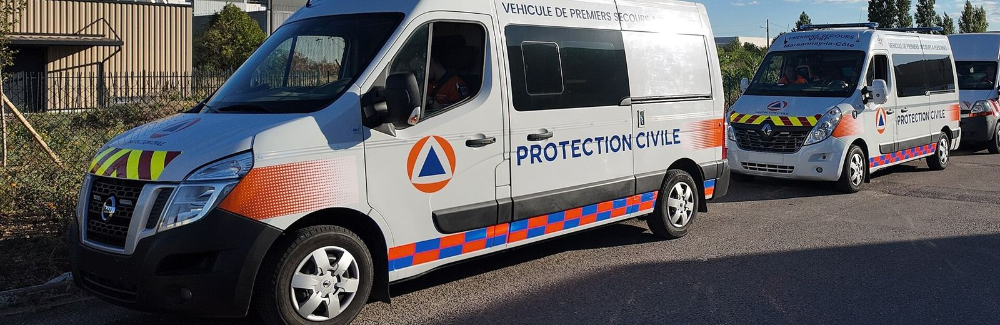

Sept. 2024 – aujourd'hui
Équipier-secouriste, chef d'équipe, chef de poste
Secours à personnes sur dispositifs prévisionnels de secours, déclenchements fédéraux et gardes SAMU. Aujourd'hui chef d'équipe et chef de poste : j'encadre les secouristes et coordonne les postes de secours.
- 600 h+de bénévolat par an
- Des centainesd'activités
- PSE1 · PSE2 · AEP1certifications
- Missions marquantesIncendies de Bordeaux (déclenchement fédéral), Marathon de Toulouse, gardes SAMU